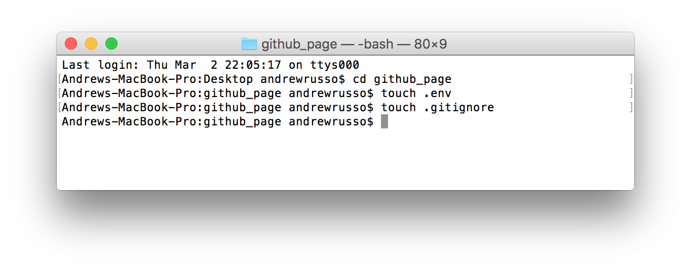

This guide will cover how to user the GitHub API to pull user information, and then have it display the stats using node plugins such as Gulp and Bower. First, lets cover the basics of what GitHub is.
GitHub is an web-based version control service that uses Git to allow users to create repositories, make changes, and have multiple people work on the same project while creating branches and marking changes. With over 14 million users, it is a widely used service that is used by companies and individuals alike.
An API, or application programming interface, is a set of routines, protocols and tools used in building software apps. It helps specify how the components in each software program should interact and display in the program. There are a variety of different APIs that each do their own thing, from Libraries and Frameworks, Web APIs, Remote APIs, and Operating Systems.
For this guide, we will be using a Web API, that will be pulling information from server-side endpoints to allow us to pull information as either Extensible Markup Language(XML), or Javascript Object Notions(JSON). With permission, we can access information from these websites, and create web apps to allow us to search and display the requests made. For what we are going to do, we will be requesting JSON from the API, and will display through a UI interface.
Before we begin, make sure you are registered and logged in to GitHub. Once logged in, you must do the following:
The API Key is a special token that allows for access to the library and resources of the API. Each API key token is different as it is used to identify who is accessing the information, and how many calls are made.
For our API key token, you can see below that we have generated one, and that we will have to copy it before we exit out. If we lose the token, we will need to generate a new one for security reasons.
We will use this API Key in a moment, but for now, let's go ahead and start creating our web application.
Now that we have our API Key, we can now go ahead and start work on creating a web app for our API Key. To begin, let's create the folders:
github-api/
├── js/
│ ├── github-interface.js
│ └── github.scss
├── scss/
│ └── styles.scss
└── index.html{
"name": "github-page",
"version": "1.0.0",
"description": "Demo to show GitHub API",
"main": "index.js",
"scripts": {
"test": "echo \"Error: no test specified\" && exit 1"
},
"keywords": [
"GitHub",
"API"
],
"author": "OSU student",
"license": "ISC"
}
Once this is completed we will install a node package that will help us with building our app called Gulp.
$ npm install browserify --save-dev
$ npm install vinyl-source-stream --save-dev $ npm install gulp-concat --save-dev $ npm install gulp-uglify --save-dev $ npm install gulp-util --save-dev $ npm install del --save-dev $ npm install jshint --save-dev $ npm install gulp-jshint --save-dev
See the Pen Gulpfile by Andrew Russo (@russspruce) on CodePen.
<head>
<script type="text/javascript" src="build/js/app.js"></script>
<title>GitHub</title>
</head>
<body>
<div class="container">
<h1>Find Github repositories!</h1>
<div class="gitSearch">
<label for="username">Enter a username:</label>
<br>
<input class="form-control" id="username" type="text" name="username">
<br>
<button class="btn" id = "githubSearch">Search</button>
</div>
</div>
<script type="text/javascript" src=“build/js/app.js"></script>
<script src="bower_components/jquery/dist/jquery.min.js"></script>
<link rel="stylesheet" href="bower_components/bootstrap/dist/css/bootstrap.min.css"> <script src="bower_components/bootstrap/dist/js/bootstrap.min.js"></script>We should now have a solid HTML page:
See the Pen Bower_HTML by Andrew Russo (@russspruce) on CodePen.
$ npm install bower-files --save-dev
var lib = require('bower-files')();
gulp.task('bowerJS', function () {
return gulp.src(lib.ext('js').files)
.pipe(concat('vendor.min.js'))
.pipe(uglify())
.pipe(gulp.dest('./build/js'));
});
<script src="build/js/vendor.min.js"></script>
<link rel="stylesheet" href="build/css/vendor.css">
gulp.task('bowerCSS', function () {
return gulp.src(lib.ext('css').files)
.pipe(concat('vendor.css'))
.pipe(gulp.dest('./build/css'));
});
var lib = require('bower-files')({
"overrides":{
"bootstrap" : {
"main": [
"less/bootstrap.less",
"dist/css/bootstrap.css",
"dist/js/bootstrap.js"
]
}
}
});
gulp.task('bower', ['bowerJS', ‘bowerCSS']);
gulp.task('build', ['clean'], function(){
if (buildProduction) {
gulp.start('minifyScripts');
} else {
gulp.start('jsBrowserify');
}
gulp.start('bower');
});See the Pen Gulpfile_bower by Andrew Russo (@russspruce) on CodePen.
$ npm install browser-sync --save-dev
var browserSync = require(‘browser-sync').create();
gulp.task('serve', function() {
browserSync.init({
server: {
baseDir: "./",
index: "index.html"
}
});
gulp.task('serve', function() {
browserSync.init({
server: {
baseDir: "./",
index: "index.html"
}
});
gulp.watch(['js/*.js'], ['jsBuild']);
gulp.watch(['bower.json'], ['bowerBuild']);
});
gulp.task('jsBuild', ['jsBrowserify', 'jshint'], function(){
browserSync.reload();
});
gulp.task('bowerBuild', ['bower'], function(){
browserSync.reload();
});
gulp.task('serve', function() {
browserSync.init({
server: {
baseDir: "./",
index: "index.html"
}
});
gulp.watch(['js/*.js'], ['jsBuild']);
gulp.watch(['bower.json'], ['bowerBuild']);
gulp.watch(['*.html'], ['htmlBuild']);
});
gulp.task('htmlBuild', function() {
browserSync.reload();
});
gulp.task('jsBuild', ['jsBrowserify', 'jshint'], function(){
browserSync.reload();
});
gulp.task('bowerBuild', ['bower'], function(){
browserSync.reload();
});$ /usr/bin/ruby -e "$(curl -fsSL https://raw.githubusercontent.com/Homebrew/install/master/install)”
$ ruby -e "$(curl -fsSL https://raw.githubusercontent.com/Homebrew/install/master/install)”
$ gem install sass
var sass = require('gulp-sass');
var sourcemaps = require(‘gulp-sourcemaps');
[...]
gulp.task('cssBuild', function() {
return gulp.src(['scss/*.scss'])
.pipe(sourcemaps.init())
.pipe(sass())
.pipe(sourcemaps.write())
.pipe(gulp.dest('./build/css'))
.pipe(browserSync.stream());
});gulp.watch(["scss/*.scss"], [‘cssBuild']);
gulp.task('build', ['clean'], function(){
if (buildProduction) {
gulp.start('minifyScripts');
} else {
gulp.start('jsBrowserify');
}
gulp.start('bower');
gulp.start('cssBuild');
});
$blue : #1F5EA3;
$orange : #EC722F;
$lightblue : #4A7ABA;
body {
background-color: $blue;
h1 {
text-align: center;
color: $orange;
margin-bottom: 40px;
}
.showGithub {
background-color: white;
border-radius: 10px;
padding: 40px;
margin-top: 20px;
}
.gitSearch {
background-color: white;
border-radius: 10px;
padding: 5px;
input{
color: $lightblue;
}
}
}
var apiKey = “API_KEY_HERE”;
exports.getRepos = function(){
};
$(document).ready(function() {
var githubInfo = new getRepos();
$('#githubSearch').click(function() {
var username = $('#username').val();
$(‘#username').val("");
githubInfo.getAllRepos(username, displayRepos);
});
});
https://api.github.com/users/'+ username + ‘?access_token=xxxxxxxxxxxx
{
"login": "russoa",
"id": 25980541,
"avatar_url": "https://avatars1.githubusercontent.com/u/25980541?v=3",
"gravatar_id": "",
"url": "https://api.github.com/users/russoa",
"html_url": "https://github.com/russoa",
"followers_url": "https://api.github.com/users/russoa/followers",
"following_url": "https://api.github.com/users/russoa/following{/other_user}",
"gists_url": "https://api.github.com/users/russoa/gists{/gist_id}",
"starred_url": "https://api.github.com/users/russoa/starred{/owner}{/repo}",
"subscriptions_url": "https://api.github.com/users/russoa/subscriptions",
"organizations_url": "https://api.github.com/users/russoa/orgs",
"repos_url": "https://api.github.com/users/russoa/repos",
"events_url": "https://api.github.com/users/russoa/events{/privacy}",
"received_events_url": "https://api.github.com/users/russoa/received_events",
"type": "User",
"site_admin": false,
"name": "OSU Student",
"company": null,
"blog": "http://oregonstate.edu",
"location": "Portland, OR",
"email": null,
"hireable": null,
"bio": "This is a test profile meant for demoing various code projects.",
"public_repos": 0,
"public_gists": 0,
"followers": 0,
"following": 0,
"created_at": "2017-02-23T11:53:59Z",
"updated_at": "2017-03-01T10:37:16Z"
}
See the Pen GH_prototype by Andrew Russo (@russspruce) on CodePen.
var getRepos = require('./../js/github.js').getRepos;
var displayRepos = function(username, profileData) {
$('.showGithub').text(""+username+"'s GitHub repositories currently on display: "+profileData+".");
}
<!DOCTYPE>
<html>
<head>
<link rel="stylesheet" href="build/css/styles.css">
<script src="build/js/vendor.min.js"></script>
<script type="text/javascript" src="build/js/app.js"></script>
<title>Github Retriever</title>
</head>
<body>
<div class="container">
<h1>Find Github repositories!</h1>
<div class="gitSearch">
<label for="username">Enter a username:</label>
<br>
<input class="form-control" id="username" type="text" name="username">
<br>
<button class="btn" id = "githubSearch">Search</button>
</div>
<div class="showGithub">
</div>
</div>
</body>
</html>
There is one last thing we must do for our program if we ever decide to publish it on GitHub or other repositories, and that is to create an .env file and a .gitignore file
As mentioned in the beginning, an API key token is specific to each account, and notifies the enterprise how many times it's being used, and for what. It can be quite troublesome if someone else had the token, and started using it for calls and programs it was intended for. In order to counter this, we can create a separate file that would allow us to be able to prevent our API key when uploaded to a repository like GitHub, but still be used on a local machine.
To begin, in the command line create two files: .env and .gitignore:
Now go into our .env file by entering in the command line $ open .env. This will open the file. In it we will enter this code that will store our API key:
exports.apiKey ="XXXXXXXXXXXXXXXXXXXX"
Once we add that, we must now go back to our github.js file, and replace the variable API key there with the following:
var apiKey = require('./../.env').apiKey;
This allows us to be able to call upon the API key value stored in our .env file, and properly insert it into our code without any issues thant's to to the code being an asynchronous call.
Once completed, we can now go ahead and add to our .gitignore file. The purpose of .gitignore is that it will ignore specific files that we do not wish to add to our repository. This could be for security reasons, but mainly to prevent our repository from being bloated with extra files like the node module folder, or .DS_Store. We will add the following:
node_modules/ .DS_Store bower_components/ build/ tmp/
Now when we upload our project, or any project to github that has this setup, we will not have to worry about someone stealing the API key, or for it taking up a lot of space in our repository.
We have now completed our project, and exploring the GitHub API. All you will need to do now is to enter into the command line to get the project running is $ gulp buld and $ gulp serve to run the program. Thank you for taking the time to explore, and feel free to use any of the resources provided here to help you with futer projects